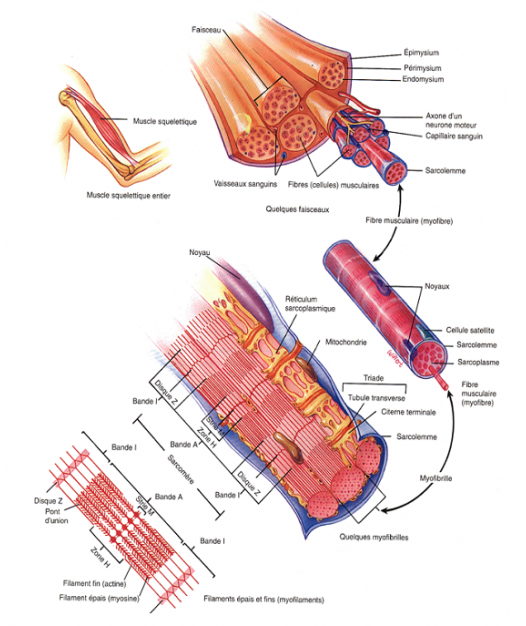

Anatomie : Quels muscles sont utilisés en cyclisme ?

Lorsqu’on fait du vélo, les muscles sont sollicités et fatiguent. Comme certains sont plus utilisés que d’autres, nous nous sommes donc posés deux questions :
Lorsqu’on pratique le cyclisme, il y a une utilisation majeure des muscles de membre inférieur. Les muscles concernés par le pédalage sont les muscles qui entraînent l’extension et la flexion de la cuisse : le quadriceps et les ischio-jambiers, les muscles de la patte d’oie et le biceps crural. Les muscles abdominaux et les muscles du membre supérieur, sont globalement moins sollicités mais lors des sprints, ou lors d'ascensions, les muscles de membre supérieur et les pectoraux interviennent.
Cependant, il est important de noter que les fibres musculaires sollicitées par le vélo sont différentes en fonction du type d'effort pratiqué :
- Le coureur cycliste classique qui effectue un contre-la-montre (distance définie avec temps chronométré) possède des fibres musculaires de type endurance. Cela signifie que ses muscles restent de taille normale : ses fibres travaillent à une fréquence de pédalage régulière et mettent du temps à donner leur puissance maximale.
- Le coureur cycliste sur piste (doit faire un nombre de tour défini) a des fibres musculaires dites de vitesse qui lui permettent d’accélérer très rapidement et de développer une énergie très importante dans un minimum de temps. Ces fibres sont celles retrouvées chez les sprinters. Les muscles sont de taille importante et sont capables de déployer une puissance importante en un temps rapide : c’est ce que l’on appelle la vélocité.
Nous nous sommes alors posés la question suivante : sur quel type de coureur cycliste voulons-nous travailler ?
Etudions plus précisément l’action des muscles inférieurs lors du pédalage.
Phase 1 : La poussée
Au cours de la première phase, le pied est en phase descendante provoquant d’abord l’extension de la cuisse puis celle de la jambe. Les muscles nécessaires sont les muscles extenseurs du genou c'est-à-dire les 4 muscles composants le quadriceps ainsi que les fessiers (petit, moyen et grand)
Phase 2 : Le point mort bas
Au cours de la seconde phase, on observe une flexion de jambe, une extension du pied, ainsi qu'une élévation du genou. Les muscles nécessaires sont les muscles flechisseurs du genou c'est-à-dire les ischio-jambiers (semi-tendineux, demi-membraneux, biceps crural) et le muscle triceps sural (au niveau du molet) composé du soléaire et le gastrocnémien.

Phase 3 : L'élévation
Au cours de la troisième phase, l'effort est globalement passif, mais on peut avoir une flexion de la cuisse et de la jambe. Les muscles nécessaires sont alors une nouvelle fois les muscles flechisseurs du genou : les ischio-jambiers et le triceps sural.
Phase 4 : Le point mort haut
Durant cette phase, c'est la reprise de la poussée vers l’avant. Il y a une extension de la jambe et du pied initiée par les muscles antérieurs de la jambe. Les muscles utilisés sont les muscles extenseurs du genou :
- Jambier antérieur
- Hanche : illiaque, tenseur fascia-lata, psoas
- Cuisse : couturier
- Mollet : tricep sural

Le fonctionnement des muscles à l'echelle cellulaire
Après avoir étudié l'action des muscles en fonction du mouvement effuectué, on peut maintenant s'intéresser à la constitution d'un muscle pour mieux comprendre son fonctionnement dans sa globalité.
Un muscle est constitué de tissus musculaires et de tissus conjonctifs (vaisseaux sanguins et nerfs). Les tissus musculaires sont des faisceaux musculaires. Ses faisceaux sont eux-mêmes constitués de plusieurs fibres musculaires. Les fibres musculaires correspondent aux cellules du muscles.
Dans ces cellules, il y a ce que l’on appelle des myofibrilles qui sont des complexe de filaments protéiques qui s’assemble pour former des sarcomères. Lors d’une contraction (augmentation du potentiels d’action), les filaments mince (actine) et épais (myosine) des sarcomères se chevauchent.
